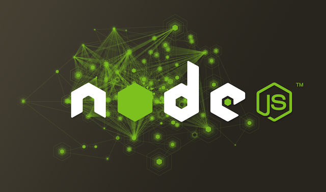

Production Node.js Secrets

@dshaw

Before Node.js there was
Large-scale government contracting
- Military and security
- Healthcare
- Education
Languages
Java
ColdFusion
PHP
Front-end JavaScript
Startup Experience

Storify
Spreecast
Voxer
Storify

Express
MongoDB / Mongoose
Redis
Spreecast

Socket.io
Redis
(Express)
Voxer
Mobile
Redis
Riak
To help.
Building Apps for Production Deployment
Old School: Monolithic Apps

Pass everything through one master process and delegate.
You can build Node apps like this
...but you shouldn't.
NodeUp
The Shape of Node.js Apps

Focused processes doing specific things.
K.I.S.S.
Keep It Small and Simple
Small, focused processes > Monolithic
Applies to both modules and apps.
Node.js core is kept intentionally simple.
The core team's objective is to stop working on Node.js.
No one
If you take away one thing, let it be this.
Production Node.js
2+ Processes
- Think horizontal early.
- Many Node frameworks have an in Memory mode for local development. GTFO.
- Use Node.js core Cluster or Mixture to prototype locally.
Mixture
var mix = require('../../').mix()
var count = process.argv[2] || 4 // maxes out locally at ~82
, ioPort = 8880
, nodeId = 0
// announce data server
mix.task('announce').fork('data.js')
// socket.io instances
var socketio = mix.task('socket.io', { filename: 'app.js' })
for (var i = 0; i < count; i++) {
ioPort++;
nodeId++;
var worker = socketio.fork({ args: [ioPort, nodeId] })
}
Mixture - announce
var announce = require('socket.io-announce').createClient()
, symbols = 'THOO GOOF EXIT BOP SDD ALPP RIGM OPPL HPBG'.split(' ')
function dataStream () {
var n = Math.round(Math.random()*5)
, data = {
id: (Math.abs(Math.random() * Math.random() * Date.now() | 0))
, symbol: symbols[n]
, price: (Math.random()*1000).toFixed(2)
, n: n
}
announce.emit('quote', data)
}
dataStream()
setInterval(dataStream, 800)
Mixture - Socket.io
var express = require('express')
, sio = require('socket.io')
, RedisStore = sio.RedisStore
var port = process.argv[2] || 8880
, id = process.argv[3] || 0
, delay = process.argv[4] || 800
, app = express.createServer(express.static(__dirname + '/.'))
, io = sio.listen(app, { 'store', new RedisStore({ nodeId: function () { return id } }) })
io.sockets.on('connection', function (socket) {
socket.on('purchase', function (data, fn) {
data.timestamp = Date.now()
setTimeout(function () { // without a delay the transition is imperceptible
socket.emit('confirm', data)
socket.broadcast.emit('activity', data)
}, delay)
})
app.listen(port)
Production Mode
Many larger platforms have a "production mode".
And default to "development mode".
Use production mode*.
* Unless you know better.
Express
Run in production mode in production
$ NODE_ENV=production node app.js
Express Sessions
connect-redis
(2+ processes)
var SessionStore = require('connect-redis')
app.configure(function(){
this.use(express.session({
key: 'skeleton'
, secret: 's3cret'
, store: new SessionStore({
cookie: { domain: '.example.com' }
, db: 1 // redis db
, host: 'redis.example.com'
})
}))
})
Socket.io
Run in production mode in production
$ NODE_ENV=production node app.js
Rinse. Repeat.
Socket.io Production Configuration
var io = require('socket.io').listen(80);
io.configure('production', function(){
io.enable('browser client etag');
io.set('log level', 1);
io.set('transports', [ 'websocket', 'flashsocket', 'htmlfile', 'xhr-polling', 'jsonp-polling' ]);
});
io.configure('development', function(){
io.set('transports', ['websocket']);
});
Socket.io RedisStore
(2+ processes)
var sio = require('socket.io')
, RedisStore = sio.RedisStore
, io = sio.listen()
io.configure(function () {
io.set('store', new RedisStore({ host: 'http://redis.example.com' }))
})
Socket.io RedisStore
Production Config
var redis = require('redis')
, redisClient = redis.createClient(port, hostname)
, redisSub = redis.createClient(port, hostname)
redisClient.on('error', function (err) {
console.error(err)
})
redisSub.on('error', function (err) {
console.error(err)
})
Setup AUTH and DB here too if you need them.
Socket.io RedisStore
Production Config (cont.)
io.configure(function () {
io.set('store', new RedisStore({
nodeId: function () { return nodeId }
, redisPub: redisPub
, redisSub: redisSub
, redisClient: redisClient
}))
})
Building Apps for Production Deployment
The Event Loop is your friend,
until it's your enemy.
console.time('blocking-loop')
for (var i = 0, len = 100000000; i < len; i++) { ; }
console.timeEnd('blocking-loop');
Don't block.
Don't stop the event loop.
Handle uncaughtException Event
Choose one:
Log, trace, exit(1).
process.on('uncaughtException', function (err) {
console.error('uncaughtException:', err.message)
console.error(err.stack)
process.exit(1)})
Bury. (Almost never the right answer.)
process.on('uncaughtException', function (err) {
console.error('Caught exception: ' + err)
})
Capture uncaughtExceptions
var logger = require('./logger')
process.on('uncaughtException', function (err) {
logger.error('uncaughtException:', err.message)
logger.error(err.stack)
process.exit(1)
})
Key place to start debugging.
Listen to all error events
This means:
- net.Server
- tls.Server
- http.Server
- https.Server
- Anything that inherits from or creates an instance of the above. *
server.on('error', function (err) {
console.error(err)
})
If you don't?
uncaughtException
Dealing with Production Chaos
Use a Process Manager
Keep your processes running.
- SMF (Solaris)
- Upstart (Linux)
- ...maybe Forever
How are you doing?
Create a status or health endpoint.
- process.memory
- process.uptime
- process.pid
- connections
- proc: cpu microtime
/health
app.get('/health', function(req, res){
res.send({
pid: process.pid,
memory: process.memoryUsage(),
uptime: process.uptime()
})
})
Proc
Currently Solaris only.
Expose system state via the /proc file system. e.g. /proc/self/usage
$ proc usage 10008 | json
Will accept Linux contributions.
REPL
Logging is fantastic. It helps you know when things are going wrong.
app.on('error', function (err) {
console.error(err)
})
Now what?
Without a REPL
To the code...
Sometimes, it's your code.
Many times it is not. It's network or it's your database.
It's only there if you put it there.
Adding a REPL
var net = require('net')
, options = { name: 'dshaw' }
net.createServer(function (socket) {
repl.start(options.name + "> ", socket).context.app = app
}).listen("/tmp/repl-app-" + options.name);
Now you're ready for production chaos.
REPL demo!!!

Questions?
@dshaw
More at: github.com/dshaw